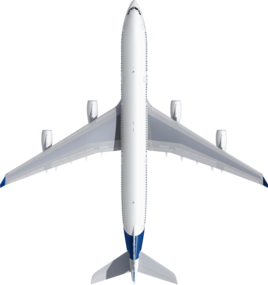
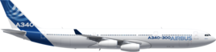
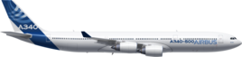
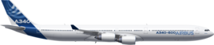

| |
The A340 has greater range at lower cost than any other long-range widebody commercial jetliner. Its market-matched capacity and unique economics make it profitable on some of the world’s longest, most demanding airline routes. The aircraft’s extended reach and spacious interior also tailors it for VVIP and government use with highly discerning customers.
Four distinctive versions of the A340 have been produced by Airbus: the A340-200(no longer manufactured), A340-300, A340-500 and A340-600. With their different fuselage lengths, this product line accommodates from 240 to 359 passengers in highly comfortable two-class cabin configurations, providing extended operating ranges of up to 9,000 nautical miles.
With a service range of more than 7,400 nautical miles, Airbus’ A340-300 is tailored to meet the needs of the 300-seat long-range market – offering direct point-to-point services and increased flight frequencies at lower costs. The four-engine A340-300 features one of the quietest cabins in the sky – a key element for relaxing long-haul operations – as well as the best economy in its class, which makes this jetliner an airline favourite. The A340-300 seats 295 passengers in a typical three-class cabin configuration, while a two-class layout comfortably accommodates as many as 335 travellers.
| Category | Data |
|---|---|
| Manufacture date | 1991 |
| Range | 13,700Km |
| Seating Arrangement | 295 persons (3 classes) |
| Max Payload | 43.5 (41.0) tonnes |
| Engines | CFM56-5C4/Px4 Thrust Range:151kN |
| Wingspan | 60.30m |
| Height | 16.91m |
| Overall Length | 63.69m |
The A340-500 combines performance, comfort and capacity for highly efficient ultra long-haul operations. In a typical three-class cabin arrangement, this version of Airbus’ four-engine A340 Family can accomodate a maximum of 313 passengers, and its cabin flexibility enables seat pitch to be adapted in units of one inch – while galleys, lavatories and stowage can be located in different numbers, groupings and locations.
With a range of up to 9,000 nautical miles, the A340-500 is operating on some of the world’s longest non-stop routes.
| Category | Data |
|---|---|
| Manufacture date | 2002 |
| Range | 16,670Km |
| Seating Arrangement | 313 persons (3 classes) |
| Max Payload | 43.3 tonnes |
| Engines | RR Trent 500x4 Thrust Range:235(249)kN |
| Wingspan | 63.45m |
| Height | 17.28m |
| Overall Length | 67.93m |
The long Airbus A340-600 is the longest-fuselage jetliner ever built by Airbus, and the largest-capacity member of the A340 Family. With an overall length of 75.3 metres, it has a seating capacity for 360 passengers in a three-class layout, or 419 in a two-class configuration. This aircraft provides operators with unrivalled standards of space, comfort and amenities in each class of service, along with twice the underfloor cargo capacity of comparable airliners.
The Airbus A340-600 also is an ultra long-haul leader, with a range of 7,900 nautical miles. It suffices beyond expectations for the best economy on long-haul routes, the A340-600 offers unmatched operational flexibility on non-stop flights over remote areas such as oceans and mountain ranges
| Category | Data |
|---|---|
| Manufacture date | 2001 |
| Range | 14,600Km |
| Typical Seating | 380 persons (3 classes) |
| Max Payload | 55.6 tonnes |
| Engines | RR Trent 500x4 Thrust Range:249kN |
| Wingspan | 63.45m |
| Height | 17.22m |
| Overall Length | 75.36m |